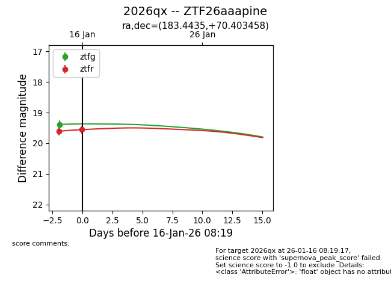
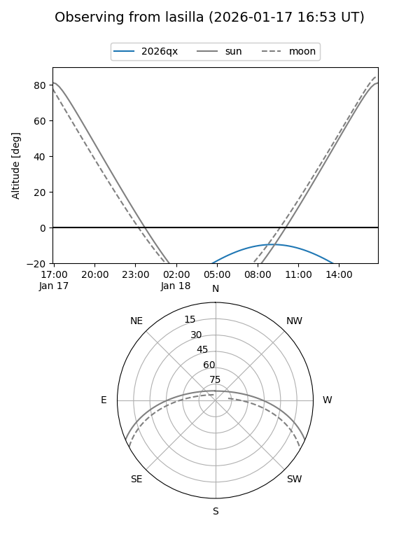
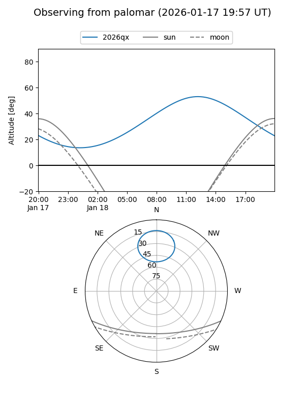
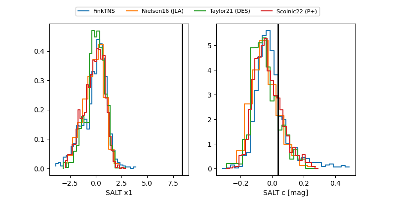

2026qx
Target 2026qx at 2026-01-20 11:01
Aliases and brokers:
FINK: link
Lasair: link
ALeRCE: link
TNS: link
YSE: link
alt names
ZTF26aaapine (ztf,fink_ztf)
2026qx (tns,yse)
Coordinates:
equatorial (ra, dec) = 183.4435,+70.40346
equatorial (HMS+DMS) = 12:13:46.45,+70:24:12.45
galactic (l, b) = (127.4947,+46.38969)
Flags:
Photometry:
last ztfg=19.40, ztfr=19.20
3 ztfg, 3 ztfr detections
Lightcurve

Visibility


Additional plots
